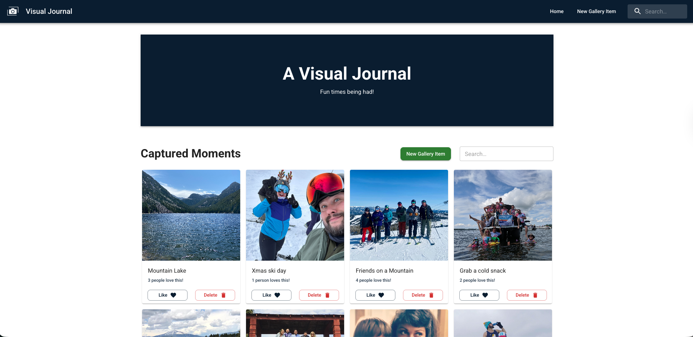
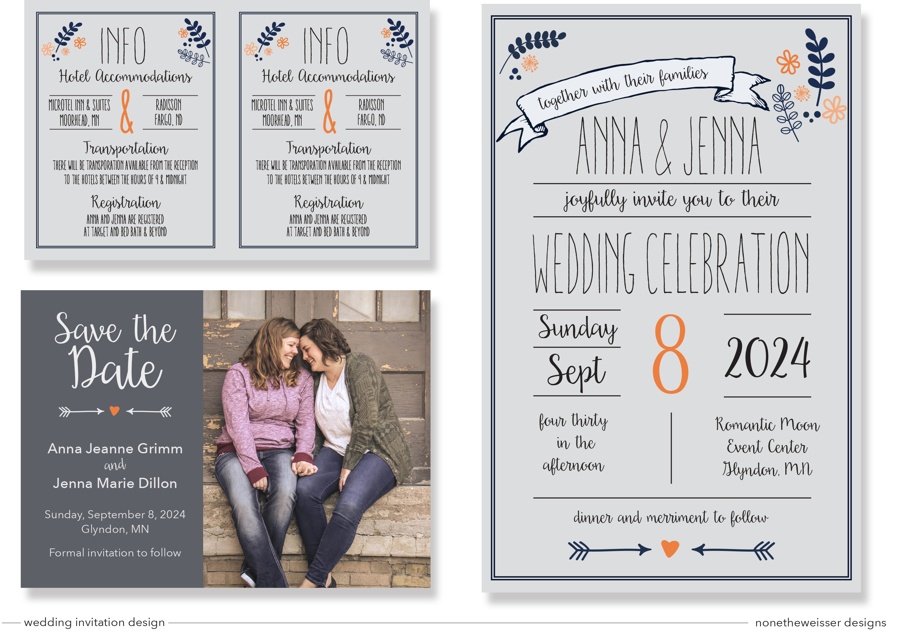
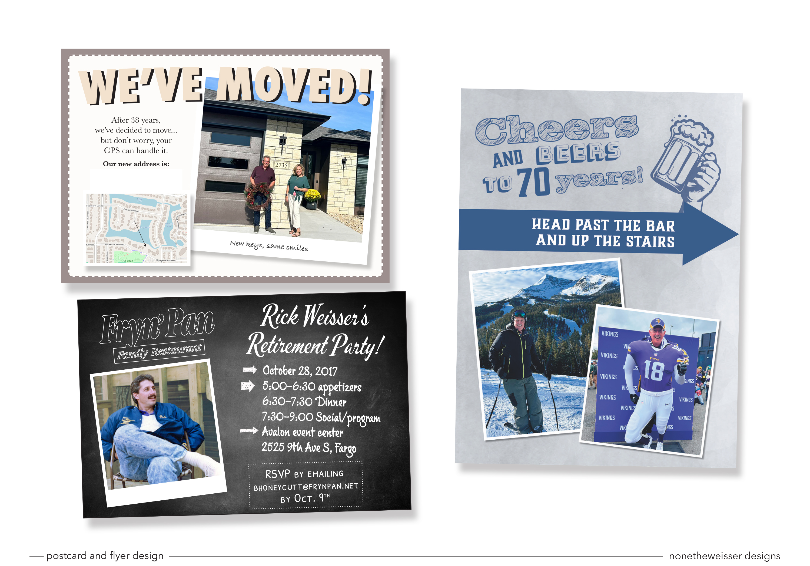
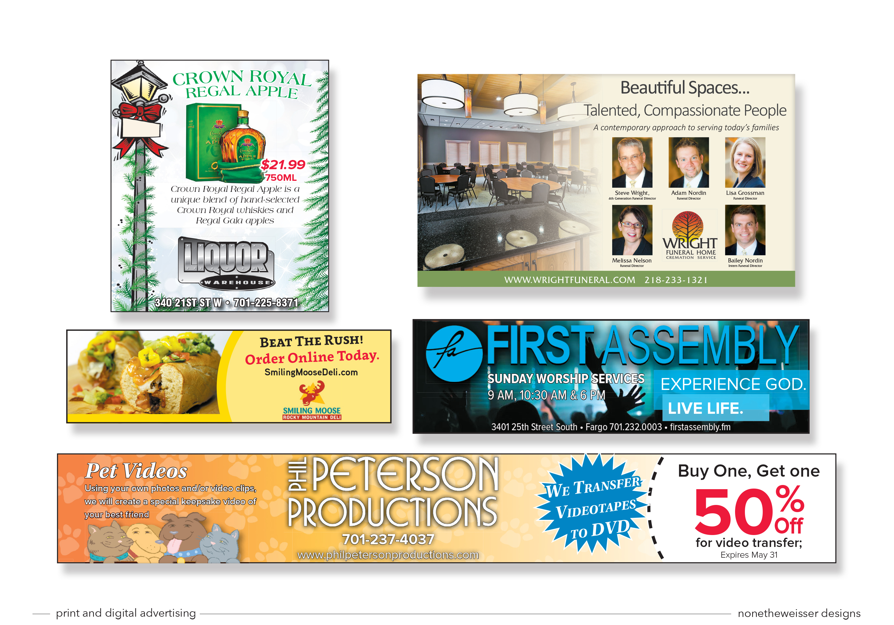

Hi, I'm Nick. Over the last decade, I've led creative teams and
delivered high-quality print and digital projects. I’ve managed
complex workflows, mentored designers, and collaborated across
departments to consistently meet tight deadlines.
My curiosity about technology and focus on creating practical
solutions led me to Emerging Digital Academy, where I transitioned
into full-stack development to expand the way I create. I now combine
my leadership background with technical skills in modern web
development to build efficient, user-friendly applications that solve
real problems.
Outside of work, I enjoy experimenting with new recipes, playing
kickball, golf, and pickleball, and relaxing with friends over board
games. I love combining creativity and development to build tools that
feel intuitive and genuinely help people.
Primary Technologies
HTML5
CSS3
JavaScript
React
Node.js
Express
PostgreSQL
Material UI
Additional Experience
Technologies I have hands-on experience with and am actively
developing deeper proficiency in
Design Tools
A decade-plus of professional design experience in graphic design for print and
digital media
 Photoshop
Photoshop
 Illustrator
Illustrator
 InDesign
InDesign
Featured Projects

Prep and Preserve
Prep and Preserve is a recipe management app designed to help
home cooks organize, track, and save their favorite recipes. It
allows users to easily browse, add, and categorize recipes,
making food preparation simple and efficient. Users can mark
recipes as “made,” favorite their go-to dishes, and explore
trending recipes from the community for inspiration. The app
brings all your culinary ideas together in one convenient,
easy-to-use platform.

A Visual Journal
Visual Journal is a gallery-style web application that allows
users to upload, view, and interact with images that hold
personal meaning. Each entry can toggle between its image and
description, letting you tell the story behind the picture.
Users can also like entries, delete them, and search/filter
through their visual memories.
Graphic Design Portfolio

Wedding Invitation

Postcard and Flyer

Print and Digital Advertising

Solo Project Wireframes

{kind=link}
{kind=link}
{kind=link}
{kind=link}